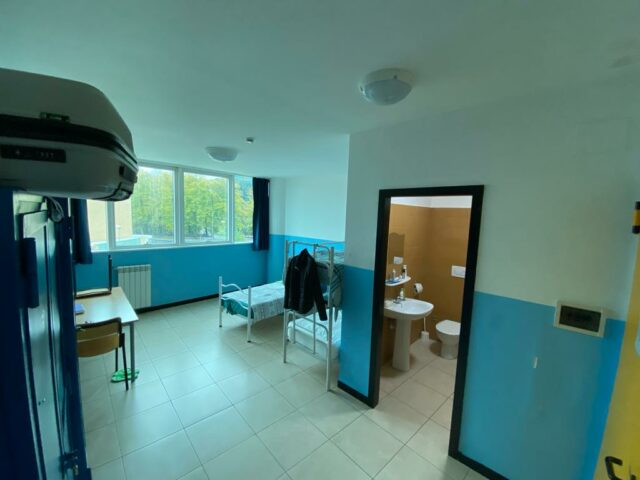

I nostri Servizi
Dal vitto all'alloggio, dallo studio ai laboratori: ogni spazio del Convitto "Costaggini" è progettato per sostenere la crescita dello studente.

Servizio 01
Ristorazione scolastica
Il servizio di ristorazione è un impegno costante per il Convitto. I pasti sono preparati dal personale specializzato nella cucina interna. I menù sono concordati con la ASL di Rieti e utilizzano ingredienti freschi, di qualità garantita, quasi totalmente a km zero: nel reatino si producono olio EVO, formaggi, cereali, pane fresco, pasta, latte, ortofrutta, conserve, salumi e carni locali.
Trattandosi di refezione interna e autonoma, gli Chef della cucina possono soddisfare esigenze particolari di carattere nutrizionale, culturale o religioso. I pasti sono sempre consumati alla presenza del personale educativo in servizio.
- 🌅 Colazione: 07:00 – 07:35
- 🍽️ Pranzo: 13:45 – 14:45
- 🌙 Cena: 19:00 – 20:00
- Menù vario, concordato con la ASL di Rieti e variato settimanalmente
- Possibilità di menù personalizzato per allergie, intolleranze e diete certificate
- I pasti sono sempre consumati alla presenza del personale educativo

Servizio 02
Alloggi e camere
Le camere del Convitto "Costaggini" sono dislocate su cinque piani: tre piani riservati al settore maschile e due al settore femminile. Tutte le stanze sono triple e dotate di servizi igienici interni riservati.
- Camere triple con bagno privato interno
- Cinque piani: tre per i convittori, due per le convittrici
- Armadietto personale per ciascuno studente
- Spazi comuni su ogni piano
- Accessi controllati e sorvegliati H24
- Pulizie regolari degli spazi comuni

Servizio 03
Studio guidato
Lo studio guidato è uno dei pilastri della vita convittuale e uno degli strumenti più efficaci per il successo scolastico. Ogni pomeriggio, nella fascia oraria 15:30–17:15, tutti i convittori e semiconvittori si dedicano allo studio in un ambiente silenzioso, ordinato e sorretto dalla presenza attiva degli Educatori.
Non si tratta di sorveglianza passiva: gli Educatori intervengono, spiegano, chiariscono, monitorano il profitto tramite il Registro Elettronico e segnalano alle famiglie eventuali difficoltà prima che si trasformino in insufficienze. I ragazzi arrivano a scuola preparati, ogni giorno.
- Orario fisso obbligatorio: 15:30 – 17:15 dal lunedì al venerdì
- Educatori presenti e disponibili per spiegazioni individuali
- Accesso al Registro Elettronico per monitorare il profitto in tempo reale
- Ambiente silenzioso e ordinato, strutturato per la concentrazione
- Coordinamento con i Consigli di Classe per interventi mirati
Ogni giorno 15:30–17:15 Obbligatorio

Servizio 04
Sport e benessere
Il benessere psicofisico degli studenti è una priorità del Convitto. Presso diverse strutture della città vengono proposte attività sportive e ricreative su proposta degli educatori e in base alle preferenze dei ragazzi.
- Palestra (in strutture cittadine convenzionate)
- Calcetto e calcio
- Basket e pallavolo
- Rugby e pallanuoto
- Calciobalilla e giochi da tavolo
- Pomeriggi al cinema e a teatro
Inclusivo Attività extrascolastiche

Servizio 05
Tecnologia e connettività
Il Convitto "Costaggini" è dotato di connettività a banda larga e di una rete Wi-Fi capillare disponibile in tutte le aree comuni e nelle sale studio. I convittori possono collegarsi con i propri dispositivi personali per lo studio, la ricerca e le comunicazioni con le famiglie.
- Connessione Wi-Fi nelle aree comuni e sale studio
- Banda larga dedicata per uso didattico e comunicazioni
- Accesso Wi-Fi in tutte le aree comuni
- Accesso con dispositivi personali (smartphone, tablet, laptop)
- Utilizzo consentito negli orari previsti dal Regolamento
PNSD GDPR Wi-Fi

Servizio 06 · Fiore all'occhiello
Laboratorio Musicale
Da oltre vent'anni, il Laboratorio Musicale del Convitto "Costaggini" è uno spazio vivo dove la musica diventa strumento di crescita, espressione e comunità. Nato dalla passione e dall'esperienza di musicisti esperti, accompagna ragazze e ragazzi in un percorso autentico di conoscenza e approfondimento musicale — dalla teoria alla pratica, dallo strumento alla voce, dal repertorio classico alle sonorità contemporanee.
Non è un'attività facoltativa qualsiasi: è un'esperienza formativa che sviluppa disciplina, sensibilità, capacità di ascolto e di collaborazione. Molti ex convittori ricordano il Laboratorio come uno dei momenti più significativi degli anni al Costaggini.
- Oltre 20 anni di attività continuativa al servizio dei talenti
- Chitarra classica, pop, etno-popolare e canto corale
- Percorsi individuali e d'insieme, adattati a ogni livello
- Concerti, recital e produzioni discografiche
- Aperto a tutti i convittori, anche senza esperienza musicale
20+ anni Chitarra & Canto Concerti
Scopri il Laboratorio →

Servizio 07
Salute e assistenza
Il Convitto dispone di un servizio di infermeria diurno presidiato da un'infermiera professionale. La salute dei convittori è seguita con attenzione costante — dalla gestione delle terapie farmacologiche quotidiane alle emergenze notturne.
Cosa succede se il convittore sta male?
L'educatore di turno valuta la situazione e contatta l'infermiera. Se necessario, viene avvertita immediatamente la famiglia. Per le emergenze è attivo il protocollo 118 con collegamento diretto al Pronto Soccorso dell'Ospedale "de' Lellis" di Rieti. La famiglia viene sempre informata tempestivamente.
- Infermeria diurna — infermiera professionale presente tutti i giorni scolastici
- Somministrazione farmaci su prescrizione medica scritta del curante
- Protocollo emergenze H24 — educatori formati per primo soccorso
- Collegamento diretto con il PS Ospedale "de' Lellis" di Rieti
- Comunicazione immediata alla famiglia in caso di malessere
- Gestione certificata di allergie, intolleranze e patologie croniche
- Centro di Informazione e Consulenza (C.I.C.) per il supporto psicologico
- Collaborazione con ASL di Rieti per menù e sorveglianza sanitaria
📋 Per i genitori: al momento dell'iscrizione va consegnata la documentazione medica relativa ad allergie, intolleranze o patologie croniche. Ogni terapia farmacologica deve essere accompagnata da prescrizione del medico curante.
D.Lgs. 81/2008 ASL Rieti C.I.C. Primo soccorso
Riepilogo orari
Orari dei servizi principali
| Servizio | Lunedì–Venerdì | Sabato | Domenica |
|---|---|---|---|
| Prima colazione | 07:00 – 07:35 | — | — |
| Pranzo | 13:45 | — | — |
| Merenda | 17:15 | — | — |
| Cena | 19:00 | — | — |
| Studio guidato | 15:30 – 17:15 | — | — |
| Libera uscita | 17:30 – 19:15 (lun–gio) | — | — |
| Laboratorio Musicale | Su programma | — | — |
| Infermeria | Diurna | — | — |
| Riposo notturno | 22:30 | — | — |
Il venerdì non è prevista libera uscita: i convittori rientrano a casa all'uscita di scuola.
Hai domande sui servizi?
Il nostro staff è disponibile per qualsiasi chiarimento su tariffe, disponibilità e modalità di accesso.
Contattaci →